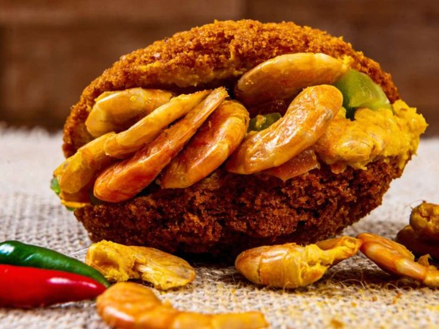
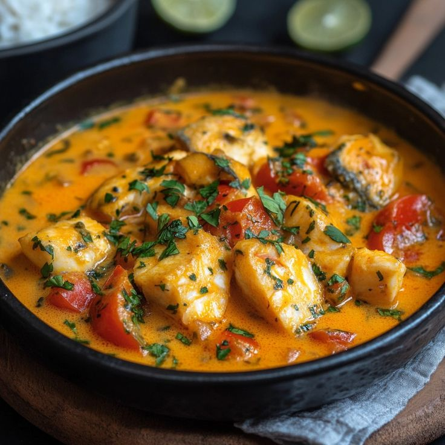
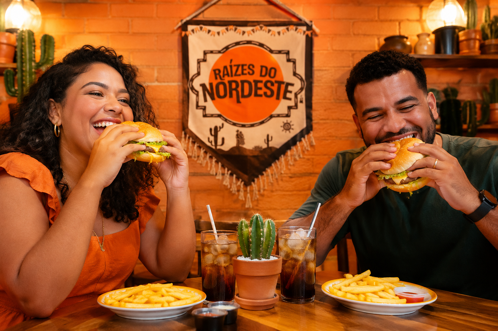
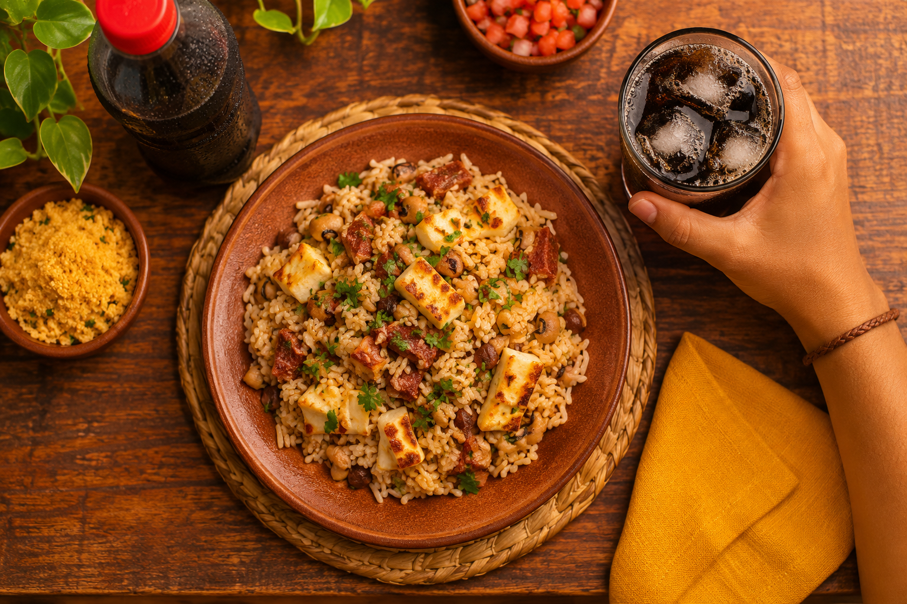

Acarajé Baiano
Uma delícia da culinária baiana. Com massa de feijão-fradinho frito, recheado com vatapá e camarão. Saboroso em cada mordida!
Descubra pratos típicos preparados para celebrar a cultura e a culinária nordestina.
Conheça nosso cardápioTradição que atravessa gerações
Conheça três clássicos da culinária nordestina que celebram nossa tradição.

Uma delícia da culinária baiana. Com massa de feijão-fradinho frito, recheado com vatapá e camarão. Saboroso em cada mordida!

Clássico da culinária nordestina. Preparado com arroz, feijão, queijo coalho e temperos especiais. O sabor e tradição Nordestina em cada garfada!

Tradicional da culinária brasileira. Preparado com peixe fresco, leite de coco, pimentões e temperos especiais. Trazendo a combinação irresistível à mesa!


Faça seus pedidos, aculume pontos e troque por descontos especiais. Cada pedido é uma nova oportunidade de aproveitar ainda mais nossos pratos!
Acumule pontos a cada compra elegível.
Troque pontos por recompensas
Peça seus lanches e porções favoritos e aproveite o gostinho do Raízes do Nordeste sem sair de casa.
 Mais pedido
Mais pedido
Pastel crocante de carne seca, trazendo uma combinação irresistível de sabores!

Pão macio, carne moída bem temperada e muito sabor em cada mordida!

Sanduíche de carne desfiada, com queijo coalho. Totalmente suculento!
O Raízes do Nordeste nasceu da paixão pelos sabores, pelas tradições e pela riqueza da culinária nordestina. Nosso propósito é levar até você lanches inspirados nessa cultura tão especial, preparados com carinho e ingredientes que valorizam as raízes da nossa região.
Mais do que servir comida, queremos proporcionar uma experiência cheia de sabor, acolhimento e tradição. Cada pedido é um convite para conhecer e celebrar um pouquinho do Nordeste.